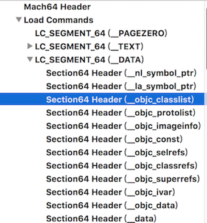
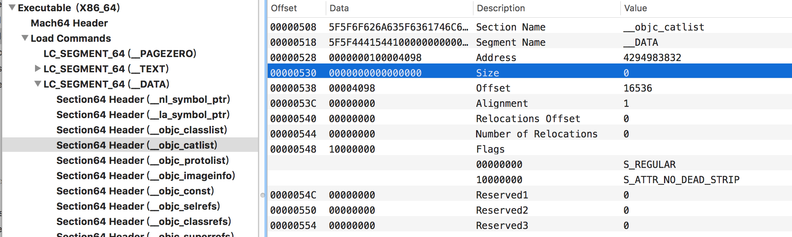
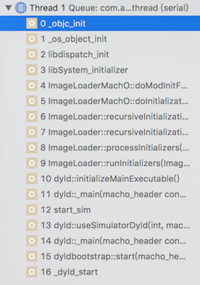
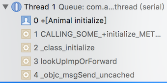
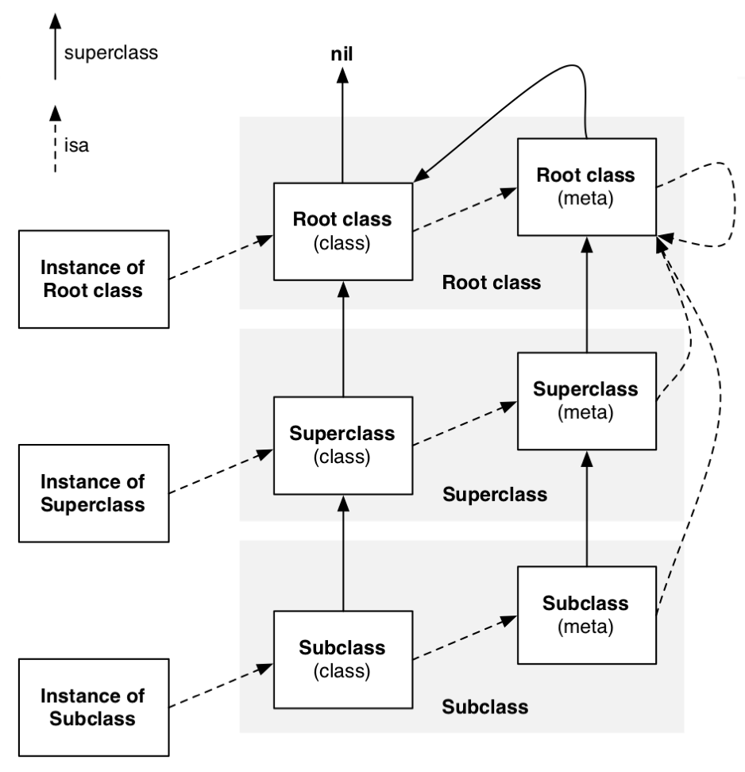

0x01 前言
em…..好像没啥说的，直接撸起袖子干代码。
0x02 举个例子
首先，我们新建一个Animal类，然后再建一个Animal的分类。
1 | // 头文件 |
用clang命令将Animal转成底层代码看下：
xcrun -sdk iphoneos clang -arch arm64 -rewrite-objc Animal.m -o Animal-Arm.cpp
通过下面解析出来的内容，我们可以知道Category在底层是以_category_t的结构体存在的，分类的实例方法是在这个结构体的instance_methods成员变量内。
1 | // Category结构体 |
以此类推，我们同样可以知道Category里的属性、类方法、协议同样被存放在结构体_category_t内。但是结构里是没有存放变量的成员，所以从结构体也可以知道Category是不可以添加变量的，同样属性的setter和getter也只有声明，没有实现。所以这也解释了为什么分类不会自动生成getter和setter，以及为什么不能添加成员变量。
上面代码里我们也说过，会在Data段下生成一个保存在objc_catlist里的数组，我们通过Mach-O证实这一点。首先是没有分类的Category的Mach-O文件结构图，我们发现在Data段下没有objc_catlist：

而有分类的Category的Mach-O文件结构图里，明显多出了objc_catlist：

那么，Category我们知道是通过runtime在运行时被加载的，那么要继续深入挖掘的话，我们需要通过runtime源码进行了解。
0x03 Category信息的加载
程序启动的时候很多依赖库会在main函数执行之前被执行。比如Runtime所在的libObjc库，这些库都是统一由dyld进行加载的。Runtime的初始化函数在_objc_init 方法，我们首先看下_objc_init是怎么被执行到的，我们下一个_objc_init符号断点。

我们可以看到，首先是dyld动态链接器启动，然后把Mach-O加载进来，进行读取操作包括我们的类、分类、方法等，然后libSystem库的初始化，里面包括了libobjc和libdispatch等库，所以libobjc库，也在这一刻初始化。接着看_objc_init方法的实现
1 | void _objc_init(void) |
map_images对Mach-O中一些符号信息进行初始化。
1 | void map_images(unsigned count, const char * const paths[], |
这里要讲下，如何重建类的结构，也就是 class_rw_t这个结构体。通过前插的方法，将分类的方法、属性、协议信息加入到类原本的方法、属性、协议结构中。
1 | // 重建类的结构 |
因为是通过前插来调整类的结构信息，所以举个例子，比如分类中如果有跟类中一样的方法，就被插入到前面去了，执行方法的时候会去查找方法，但会首先找到分类的方法，所以这就是为什么执行的是分类的方法，而不是类里的方法，而这往往会给我们造成“被覆盖”的感觉，其实原来类的这个方法还是存在在类的方法结构中，只是排在后面而已，如果要执行这个类的方法，我们其实也可以做到的。
0x04 Load方法
回到前面，我们在说_objc_init的时候，map_images里面做了一些准备工作，让类处于待用状态，而我们或许也会注意到旁边还有一个load_images函数，那么这个函数是干嘛的？
1 | void _objc_init(void) |
load_images函数其实就是调用类以及分类里面的load方法，因为是在程序启动的时候执行的，所以我们也能证实load方法执行时机最早，且只会执行一次。
1 | void |
找到所有的load方法后，就要去执行load方法，这里只拿call_class_loads函数举例，call_category_loads其实是类似的。
从loadable_classes表中拿到每个类的load方法，然后直接执行。需要注意的是，这里是直接执行，而不是调用消息发送机制来执行方法。
1 | static void call_class_loads(void) |
正因为是直接执行load方法，不走objc_msgSend消息发送函数，所以也就不存在去方法表中查找方法的过程。所以分类的load方法，并不会”覆盖“原来类的load方法。而且源码里，首先执行的是原来类的load方法，其次执行分类的load方法，所以原来类的load方法执行时间早于分类的load方法。
0x05 Initialize 方法
说到了load方法，就不得不提initialize方法，这两个方法经常拿在一起进行比较，这里也不例外，我们继续通过源码来挖掘什么时候开始执行initialize方法。
我们在initialize方法打个断点看下调用栈

我们初始化一个对象的时候，常用的方法是alloc或者new，这两个方法都是通过消息发送来调用的。我们可以看到，在objc_msgSend的汇编代码中，调用了objc_msgSend_uncached。
在objc_msgSend_uncached里面，调用了MethodTableLookup这个宏
1 | STATIC_ENTRY __objc_msgSend_uncached |
MethodTableLookup宏的定义如下：里面我们可以看到跳转到了__class_lookupMethodAndLoadCache3函数函数。
1 | .macro MethodTableLookup |
_class_lookupMethodAndLoadCache3里面又调用了lookUpImpOrForward函数
1 | IMP _class_lookupMethodAndLoadCache3(id obj, SEL sel, Class cls) |
lookUpImpOrForward函数里面入参initialize接收的是YES，而且第一次进来的时候cls->isInitialized()是肯定为NO的。所以只当这个对象第一次调用objc_msgSend的时候肯定会调用_class_initialize函数。
1 | IMP lookUpImpOrForward(Class cls, SEL sel, id inst, |
_class_initialize函数里面首先调用父类的initialize方法，然后调用callInitialize函数。
1 | void _class_initialize(Class cls) |
通过消息调用，执行initialize方法。
1 | void callInitialize(Class cls) |
调用方式来看，我们可以发现load方法是直接执行，而initialize方法是通过消息发送来执行的。所以在这里，我们可以知道有分类实现initialize方法的情况下，只会调用分类的initialize方法，原来的类的initialize方法并不会被执行，而且执行顺序是先执行父类的initialize方法，再执行子类的initialize方法。我们举个例子，新建Animal类、Animal分类、继承Animal的子类Dog、Dog分类。
1 | @implementation Animal |
结果可以看到，如果有Category的情况下，都是先执行Category的initialize方法；其次先调用父类的initialize方法，再调用子类的initialize方法。同时，我们可以测试下，如果子类的initialize方法不实现，而只实现父类的initialize方法会有什么效果？
1 | 2018-05-09 15:42:46.513940+0800 testData[37636:28757829] Animal-Category |
父类的的initialize方法被执行了两次，这又是为什么呢？
0x06 isa指针与SuperClass
我们首先看下Class的结构：
1 | typedef struct objc_class *Class; |
指向objc_class结构体：
1 | struct objc_class : objc_object { |
受益于苹果开源，我们知道现在Class的结构如上面代码所示，而不是很多博客里的说到的这样的结构：
1 | // 这是Objective-C 1.0的结构 |
所以我们可以看到上面结构中都有一个isa和superClass成员，之间的关系可以通过下面这张图概况。

那么isa的作用如下：
实例对象的isa指向类
调用实例方法时，会先通过isa找到类，再在类的方法表中找到这个实例方法进行调用。
类的isa指针指向元类
调用类方法时，先通过类的isa找到元类，再在元类的方法表中找到这个类方法进行调用。
同样superClass的作用，显而易见是找到父类，下面会通过例子详细了解调用过程，进行实验前，我们必须记住的是调用实例方法是到这个类的方法表中查找的，实例结构自己是不保存这些的，它只做值的存储，比如age属性，实例结构里面只保存age的值，比如20这样的。而调用类方法是到这个类的元类里的方法表进行查找的。仔细看下上面这张图就可以很好理解了。
Example 实例对象调用自己的方法
测试代码如下：
1 | @interface Animal : NSObject |
这个过程是首先实例方法首先通过isa找到它的类对象，然后遍历类对象的方法表，找到eat方法进行调用。
Example 实例对象调用父类的方法
测试代码如下：
1 | @interface Animal : NSObject |
这个过程是首先实例方法首先通过isa找到它的类对象，然后遍历类对象的方法表，但是方法表里并没有这个方法，于是通过superClass找到父类对象，再到父类的方法表里进行查找，最后找到eat方法进行调用。假设父类还是没有，再一层一层上去找，直到基类为止，如果还是没找到就报错 unrecognized selector sent 。
Example 类对象调用自己的方法
测试代码如下：
1 | @interface Animal : NSObject |
这个过程是直接在自己的元类方法表里进行查找。同样的，如果是父类的类方法，就调用superClass找到父类对象，再到父类的元类里的方法表进行查找，直到基类元类为止，如果还是没找到就报错 unrecognized selector sent 。
Example 一个特殊情况
测试代码如下：这个例子里，只有NSObject实现eat的实例方法（OC里NSObject是所有类的基类），而调用方式是[Dog eat]这样的调用类方法，运行后结果如何？
1 | @interface NSObject (Category) |
执行结果是成功运行了，为什么我明明调用的是类方法，而实例方法却被触发了。如果仔细看过上面图的话，我们可以发现，当调用类方法时，元类一层一层往上进行查找，如果基类的元类里面的方法表也没有，就会来到基类（NSObject）里面的方法表进行查找，我们知道类里面保存的是实例方法，所以就会调用test方法成功。
回到前面留下的问题，Category里没实现initialize方法，而只在类里面实现initialize方法，这个类的initialize方法为什么会被执行两次？回到_class_initialize这个函数里可以看到父类的一次执行是在这里执行的。而第二次是因为自己类的元类方法表里找不到initialize方法，所以去父类的元类方法表里进行查找了。
1 | void _class_initialize(Class cls) |
0x07 objc_getAssociatedObject和objc_setAssociatedObject
我们知道分类里面可以添加property属性，但不会生成getter、settter方法和实例变量。所以给属性设置和获取值是通过objc_setAssociatedObject和objc_getAssociatedObject实现的。那么为何一定要通过这种方式实现，比如下面的代码会有什么问题？我们通过全局变量来控制：
1 | @interface Animal (Category) |
显然是有问题的，全局变量共用的是一份，如果创建多份实例，去修改这个g_Age，那么每个实例对象的age属性值不具备唯一性，我们通过测试代码看下运行结果：
1 | Animal *a = [[Animal alloc] init]; |
所以上面这种方案肯定不行的。说到唯一性，肯定还会想到每个实例对象肯定都不同的，如果以对象为key的字典，那么就能确保唯一性，比如下面这样的。
1 | @interface Animal (Category) |
我们根据运行结果可以看到我们保证了唯一性，但是缺点也很明显，我们如果有多个属性，岂不是要创建很多全局的字典。那么我们又想到可以这样做：
1 | @interface Animal (Category) |
虽然可以实现了我们的需求，但是这样写还是麻烦，那我们看看官方怎么做的，先看objc_setAssociatedObject源码：
1 | void objc_setAssociatedObject(id object, const void *key, id value, objc_AssociationPolicy policy) { |
所以我们可以明白通过objc_setAssociatedObject设置值，其实就是往一份全局的哈希表中给自己所对应的关联表中以key为健值，设置以value为值的过程。同样objc_getAssociatedObject也是相同步骤，只是换成了取值而已。我们发现，跟我之前自己实现的方案思路是差不多的，但这个显然方便多了。
category_t结构中是没有存放ivar表的，所以上述操作相当于给对象关联一个成员变量，只是在普通类中这个成员变量在ivar表中，而分类中这个成员变量被维护在一个哈希表中。我们以前经常说如何给分类添加一个属性，所以严谨的来说，我们添加的不是属性，而是手动的生成setter和getter方法，并且维护一个成员变量到一个哈希表中。分类的属性的信息是可以被存到分类的_prop_list_t表中的。
看完源码，我们再看下使用方法：
1 | static const void *ageKey = &ageKey; |
首先看下第三个参数objc_AssociationPolicy ，它一共有以下几个值：
OBJC_ASSOCIATION_ASSIGN
相当于@property(nonatomic, assign)
OBJC_ASSOCIATION_RETAIN_NONATOMIC
相当于@property(nonatomic, strong)
OBJC_ASSOCIATION_COPY_NONATOMIC
相当于@property(nonatomic, copy)
OBJC_ASSOCIATION_RETAIN
相当于@property(atomic, strong)
OBJC_ASSOCIATION_COPY
相当于@property(atomic, copy)
再看下第二个参数key，我们看到需要一个const void *指针，也就是一个任意指针都可以，所以我们精简至如下也是可以的，不用创建那么多key也可以达到我们的需求：
1 | @implementation Animal (Category) |